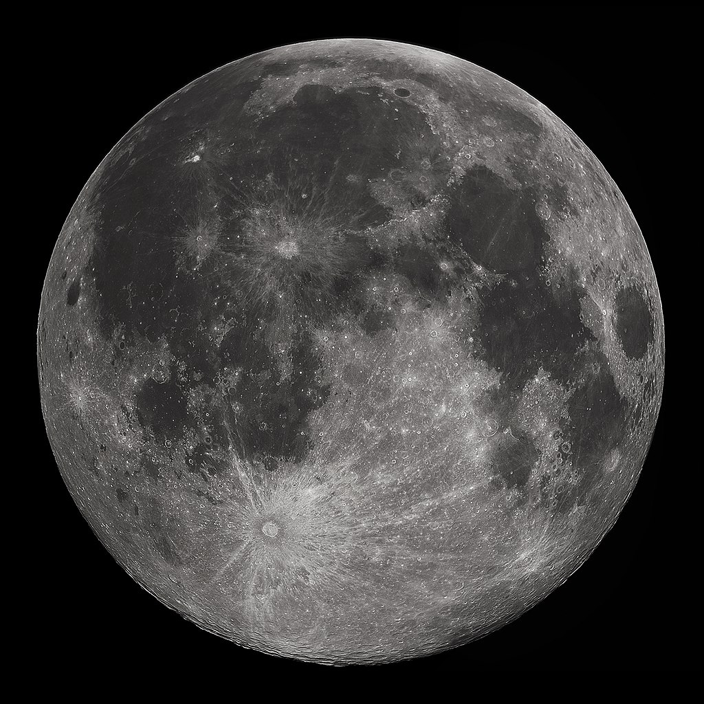
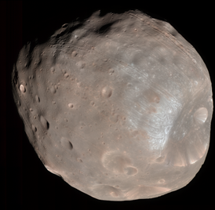

Луна́ — единственный естественный спутник Земли. Самый близкий к Солнцу спутник планеты, так как у ближайших к Солнцу планет (Меркурия и Венеры) их нет.Евро́па, или Юпитер II — шестой по отдалённости от планеты спутник Юпитера, наименьший из четырёх галилеевых спутников. Обнаружена в 1610 году.

Фо́бос (др.-греч. φόβος «страх») — один из двух спутников Марса (наряду с Деймосом). Спутник был открыт американским астрономом Асафом Холлом в 1877 году.